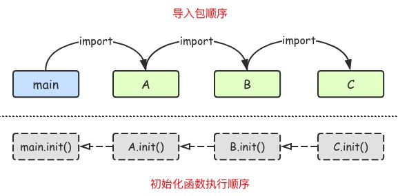

GO语言包管理
包介绍
包（package）是多个Go源码的集合，go语言有很多内置包，比如fmt，os，io等。
定义包
main包是一个可执行的包，只应用程序的入口包，编译完会生成一个可执行文件。
一个目录下的同级文件归属一个包。 包名可以不和文件夹的名字一样，包名不能包含-符号。
package 包名
可见性
如果想在一个包中引用另外一个包里的标识符（如变量、常量、类型、函数等）时，该标识符必须是对外可见的（public）。在Go语言中只需要将标识符的首字母大写就可以。
// 首字母小写，外部包不可见，只能在当前包内使用
var num = 10
//首字母大写外部包可见，可在其他包中使用
const Name = "ares"
// 首字母小写，外部包不可见，只能在当前包内使用
type person struct {
name string
}
type Student struct {
Name string //可在包外访问的方法
class string //仅限包内访问的字段
}
type Payer interface {
init() //仅限包内访问的方法
Pay() //可在包外访问的方法
}
// 首字母大写，外部包可见，可在其他包中使用
func Add(x, y int) int {
return x + y
}
func age() { // 首字母小写，外部包不可见，只能在当前包内使用
var Age = 18 // 函数局部变量，外部包不可见，只能在当前函数内使用
fmt.Println(Age)
}
包的导入
使用import关键字。 import导入语句通常放在文件开头包声明语句的下面。 导入的包名需要使用双引号包裹起来。 包名是从$GOPATH/src/后开始计算的，使用/进行路径分隔。
import (
"ares.com/studygolang/pkg/math_pkg"
"fmt"
)
自定义包名
在导入包名的时候，我们还可以为导入的包设置别名。
//可以使用a.xxx来进行调用
import (
a "ares.com/studygolang/day04/pkg/math_pkg"
"fmt"
)
匿名导入包
如果只希望导入包，而不使用包内部的数据时，可以使用匿名导入包(仅调用包中的init()函数)。
import _ "包的路径"
init()初始化函数
在Go语言程序执行时导入包语句会自动触发包内部init()函数的调用。需要注意的是： init()函数没有参数也没有返回值。
import "fmt"
var x = 100
func init() {
fmt.Println(x) //100
}
func main() {
fmt.Println("Hello！") //Hello！
}
包中init函数的执行时机 全局声明===>init()====>main()
init()函数执行顺序

init()函数与main()函数对比
- 都是go语言中的保留函数。init()用于初始化信息，main()用于座位程序入口。
- 两个函数定义的时候，不能有参数和返回值，只能由go程序自动调用，不能被引用。
- init()函数可以定义在任意包中，可以有多个。main()函数只能在main包下，并且只能有一个。
- 存在依赖的包之间不能循环导入。
- 一个包可以被其他多个包import，但是只能被初始化一次。
- 执行顺序
- 先执行init()函数，后执行main()函数
- 对于同一个go文件中，调用顺序是从上向下的，也就是先写的先被执行，后写的后被执行
- 对于同一个包下，将文件名称按照字符串进行排序，之后顺序调用哥哥文件中的init()函数
- 不同包下，如果不存在依赖，按照main包中的import顺序来调用对应包中的init()函数；如果存在依赖，最后被依赖 的最先被初始化，导入顺序:main–>A–>B–>C，执行顺序，C–>B–>A–main